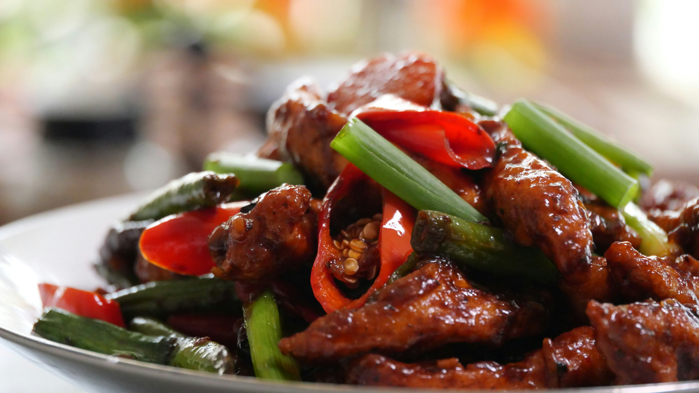

British food includes meals such as fish and chips, English breakfast, etc

Japan is known for many interesting foods such as sushi, poke-bowls and ramen. Rice is popular in their cooking.

Chinese culture comprises a wide range of food, from hoisen duck to stir-fry rice. It is popular all over the world.
